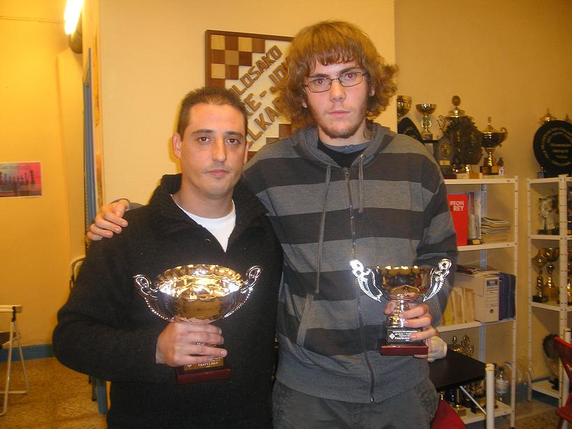
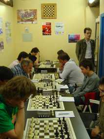
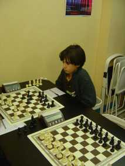

Club de Ajedrez Agustín de Leiza |
| » inicio » socios del club » cto. por equipos » últimos torneos » enlaces |
Campeonato de tercera individual en TolosaEste sábado 25 de octubre ha comenzado el torneo individual de tercera en el coqueto local que el club de Tolosa-Ibarra tiene en la plaza de la Verdura de Tolosa. Por parte de nuestro club lo juega la joven incorporación Urtzi Pérez, en su primer torneo con adultos. El torneo lo juegan 12 jugadores de todas las edades siendo el favorito por rating el jugador de Villabona David Parrón.Resumen del torneo (pdf) Visor de partidasQuinta ronda (última) 22-11-08Jornada que redondea un torneo extraño para Urtzi, ya que ha sido emparejado de nuevo con Eneko Maiz, que no pudo jugar en la tercera ronda y de nuevo no se ha podido presentar a la partida, esta vez por enfermedad. El ganador del torneo ha sido el andoaindarra y jugador del club de Villabona Miguel Hernández con 4,5 puntos de los 5 posibles.
El campeón y el subcampeón con sus trofeos. Cuarta ronda 15-11-08Nuestro jugador le ha cogido el gustillo a esto de puntuar y lo sigue haciendo aunque esta vez no haya conseguido más que las tablas. En esta cuarta ronda Urtzi jugaba contra la joven promesa de Billabona Aitor Villena, la partida ha sido muy disputada con errores por ambos bandos y que la final fue tablas en una posición en la que Aitor podría haber buscado la victoria en vez de conformarse con tablas por triple repetición. En cuanto al torneo, éste sigue comandado por el jugador andoaindarra Miguel Hernández que consiguió unas tablas a pesar de que en varios momentos parecía que estaba en peor posición.Tercera ronda 08-11-08Primer punto para nuestro jugador aunque haya sido por incomparecencia de su oponente. Respecto al torneo, éste ya tiene un lider destacado, el jugador de Billabona de procedencia andoaindarra Miguel Hernández.Segunda ronda 01-11-08Jornada agridulce para nuestro jugador. Urtzi se batió con el jugador cadete de Tolosa Aimar Intxaurrondo, jugó bien la apertura y después de un descuido de su rival acabó ganando pieza, y posteriormente una calidad, con lo que ganaba globalmente una torre, pero debido quizás a su inexperiencia decidió mantener las damas sobre el tablero con el resultado de que a causa de su rey expuesto, la dama del blanco empezó a comerse peones y se llegó a un final donde el blanco tenía 6 peones por la torre y los intentos de defensa de Urtzi furon baldíos. Esperemos que la semana que viene sea mejor y tamando la partida con más tranquilidad el resultado sea mejor.
Vista de la sala de juego de Tolosa en plena ronda 2. 
Urtzi esperando que su rival mueva en su partida de la segunda ronda. Primera ronda 25-10-08En su primera partida con el fuerte jugador de Tolosa José Mujika pagó la novatada y perdió sin oponer mucha resistencia. Esperemos que la próxima jornada juegue mejor y cambie el resultado.
|